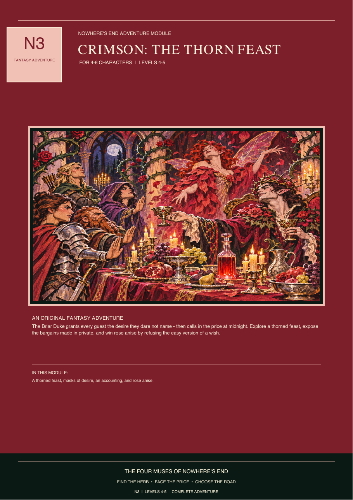

Ask what no one will answer.
Inhale moon-wormwood to cut through roots, glamours, and doubles.
Four original d20-compatible adventures of faerie sisters, impossible herbs, protective draughts, and a Dream-Wyrm hungry for the way home.

Read one module cold or follow the entire road. Every adventure is playable on its own; together, they form one escalating choice about what should remain possible.
Each sister guards an impossible herb. Harvest it through mercy, confession, refusal, or restraint; take its immediate protection now, then let d'Aniel make a liquor for the roads still ahead.
Inhale moon-wormwood to cut through roots, glamours, and doubles.
Steep glass fennel to keep the unseen toll from taking its due.
Chew rose anise to break a thorned mark or social compulsion.
Brew wayfarer's balm to deny the Wyrm its first path inward.
Four A4 modules, built for immediate table use: referee dashboards, clear procedures, print-ready layouts, maps, and choices that matter.
A thirteen-strike inn mystery: rescue the guests before roots make doubles of them all.

Guide a vanished village across three boundaries and a river with no water.

Name a desire, survive a moving fey feast, and expose a private bargain.

Refuse the easy road, outwit the Dream-Wyrm, and choose an ending.
The party decides when to take the fresh dose, and its protection changes the immediate danger without consuming the harvest. Later, the same herb becomes d'Aniel's three-dose liquor—the campaign's memory of their choices.
Read a module cold, run it, or inspect its usability. The shared judge kit gives newer DMs, veteran DMs, and production reviewers a concrete way to give evidence-backed feedback.